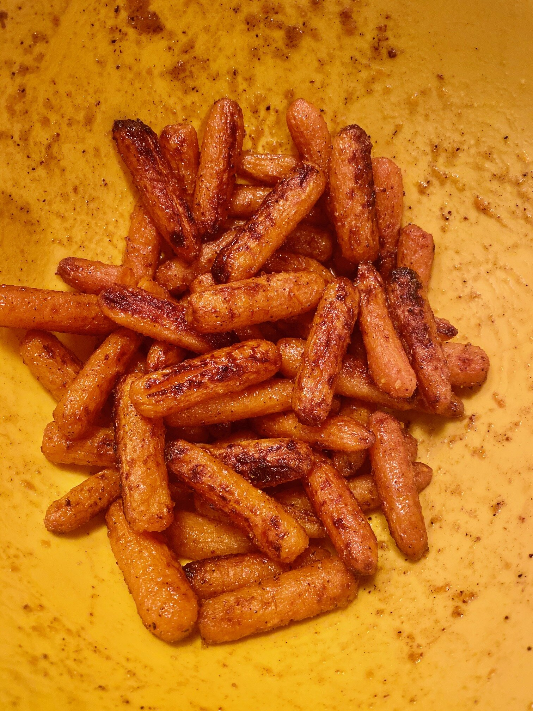

Return to homepage
Air Fryer Sweet and Spicy Roasted Carrots

Description
These tender and roasted carrots cooked in the air fryer can be on your table in less than half an hour. Tossed in a honey-butter sauce and sprinkled with your choice of fresh basil, chives, or just salt and pepper.
- 1 serving cooking spray
- 1 tablespoon butter, melted
- 1 tablespoon hot honey (such as Mike's Hot Honey®)
- 1 teaspoon grated orange zest
- ½ teaspoon ground cardamom
- ½ pound baby carrots
- 1 tablespoon freshly squeezed orange juice
- 1 pinch salt and ground black pepper to taste